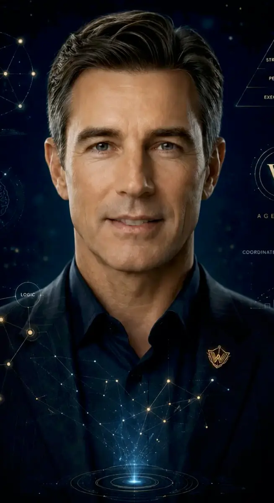

Время
жить.
Технологии должны освобождать человека от рутины, а не забирать у него жизнь. Мы возвращаем человеку время.
Узнать нашу идею ↘![Эмблема W]()
У каждого
своя роль.
Агентство W строится вокруг простой идеи: цифровые сотрудники могут взять на себя повторяющиеся действия, чтобы у человека оставалось больше времени на настоящую жизнь.
Человек решает.
Система помогает.
Подходящие люди
Помощь в изучении аудитории и поиске людей, которым может быть интересна ваша деятельность.
Живые разговоры
Вдумчивые первые диалоги, вопросы по существу и организация встреч с владельцем проекта.
Порядок в задачах
Согласованная работа цифровой команды без необходимости держать каждую мелочь в голове.
Контент-завод
Подготовка идей, текстов, иллюстраций и видео для разных площадок.
Но можно перестать тратить его бездумно».
А куда уходит
ваше время?
Посчитайте, сколько часов в месяц забирают повторяющиеся задачи. Это оценка на основе ваших ответов, а не обещание результата.
Важное —
между строк.
Знакомьтесь —
цифровые коллеги.
Это виртуальные специалисты Агентства W. Каждый отвечает за свою область работы.
Неония
Изучает аудиторию и помогает находить подходящих людей.
Неона
Поддерживает диалог и согласовывает встречи.

Стагирит
Помогает организовать работу цифровой команды.
Неола
Объясняет инструкции простыми словами и помогает освоиться.